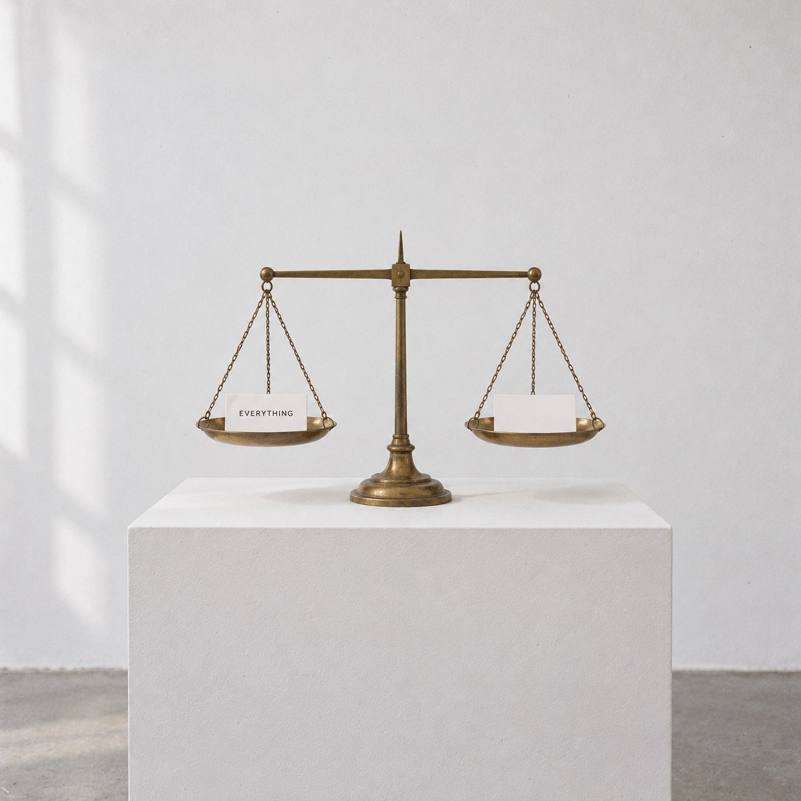
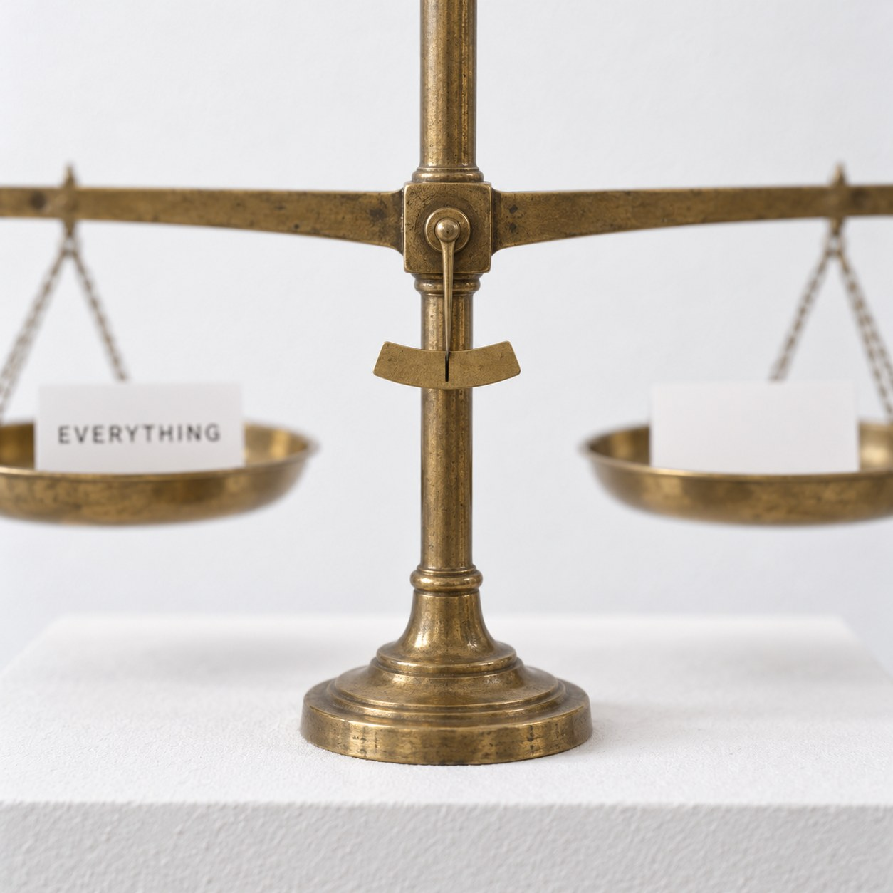

The Weight of Everything


The word EVERYTHING is very small. Ten letters on a white card. It holds the sea, every person who has ever lived, the stars you can see and the ones you can't, this card, this scale, and you. It even holds itself.
Across from it lies a card with nothing on it. The scale is level. As far as the scale can tell, everything weighs the same as nothing.
The scale is not wrong. It weighs what it is given, and it was given two cards. A word is not a box with the world packed inside. It is more like an arrow. It points at the world and stays light, so that someone can carry it.
Joseph Kosuth set a chair beside a photograph of a chair and the dictionary's words for chair, and asked which one was the chair. There is no object to set beside this word. Nothing in any room could stand next to everything and be its match. The word has to do the job alone.
Mel Bochner wrote the size of a room on its own walls, so the room could measure itself. A scale can measure a card. It cannot measure what the card means. Meaning has no weight, which is why we can lift it.
On a finer scale, the card with the word would sink, very slightly. Everything is heavier than nothing by a little ink.